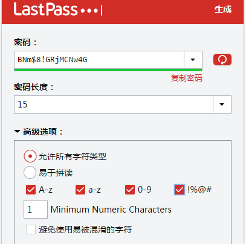
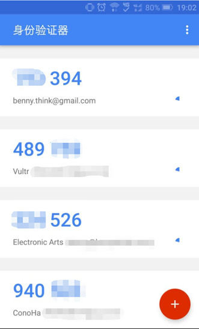
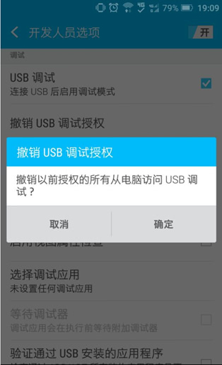

[学校上网系列]5.从设置密码中想到的：糟糕的密码
文章目录
小葵花妈妈课堂开课啦，孩子什么老不好……这是本系列的第五篇文章，细心的朋友们可能发现，第四篇怎么被吃啦？噢其实第四篇藏的比较深，哈哈。
今天我们主要讨论的问题是，密码：如何设置一个安全的、健壮的密码，以及一些保护账号安全的方式。
六七年前，编程随想写过一篇《如何防止黑客入侵[3]：如何构造安全的口令/密码》，尽管已经过去了这么多年，但他介绍的思路还是非常有参考价值的。
在探讨怎么设置密码之前，咱必须得接近夸大其词般的给各位一个警告：大部分人所设置的密码，其实非常非常非常不安全；一部分公司/网站的安全防护意识非常差。
咱先大致说说，你的密码是怎么泄漏的吧！
你的密码是如何泄漏的？
网站被黑、被拖库、SQL注入等
近几年来层出不穷的用户数据泄漏事件，估计大家可能有所耳闻吧。
这一点最值得提出表扬的就是网易，要不怎么会被称作是"脱裤狂魔"呢。
当然CSDN也一定要提一提，在2011年的泄密事件中，CSDN那丫的可是明文密码啊，这好歹还是个技术社区呢…
国外的公司也没少被爆，什么雅虎啊Dropbox啊都没少被黑。
要是公司脑筋正常的话，再怎么也会比较有良心的把密码hash一下。但是，如果哪一天出了安全问题，数据库被拖下来，那么黑客可以对散列值运用彩虹表，对待大部分比较简单的密码，还是很容易就还原出来明文的。
PS，仅仅hash是远远不够的，把散列值再hash再hash再hash也是不够的，因为大部分散列函数的运算速度往往是非常快的。安全性比较高的方式之一是使用随机盐配合安全的散列函数。
近日看到一个新闻，Google找到了有效碰撞SHA-1的方法，足以载入史册的一次尝试，这么多年，SHA-1终于也要步入MD5的后尘啦。这不，写文章这功夫，cloudflare也被干了，暴露了客户的机密信息。
不得不说， 能够在第一时间把出现的问题公布出来，这种精神值得赞扬；而不像某些公司藏着掖着以为会有不透风的墙。
木马、后门
十几年前曾经流行QQ盗号木马，近几年甚至出来了XcodeGhost、黑暗幽灵这种高级的后门、木马。真是应了范伟的那句话，防不胜防啊！
不知道XcodeGhost是不是借鉴了C语言他爹们的设想。
不安全的传输
假如网站在登录的时候，没有使用HTTPS，那么传输过程中就是明文的，中间人/窃听者极有可能获取到用户输入的密码（即使是hash之后的也十分危险）；假如网站只在登录过程中使用HTTPS，其实也是很危险的，中间人/窃听者如果获取到cookies，也就基本上等同于知道密码了；哪怕是一个纯静态的、没有HTTPS的网站，中间人也可以改掉网站的某部分内容（外观啊，链接啊什么的），将访问者引入钓鱼网站等等。
这也是我一直极力推崇全站HTTPS的原因，无论敏感信息是否存在，哪怕是纯静态，也要使用HTTPS。使用HTTPS的价值不仅仅在于对访客负责这种责任感，还可以防止运营商薅羊毛等等。
这一点不仅仅适用于网站，任何登陆场合，如果使用了不加密的、不安全的协议，那么都是非常危险的，比如说…telnet
网易，我干你全家
暴力破解
一些网站系统的后台提供的API或者是什么，并不限制登录尝试的次数，比如说WordPress有一个xmlrpc.php啦，早期某邮箱POP3随意暴力破解啊。
钓鱼
没有小锁头的地址栏是不可信的，I1l0oO是很难分清的，在本系列的前一篇文章《从钓鱼网站中想到的：不靠谱的域名》已经比较完善的提到了这个问题，这就不说了。
一不小心说走嘴
这种事情一般来说比较罕见，但是对于程序员这圈，可能会比较常见。比如说我根据七牛的SDK写了个客户端，上传源代码的时候不小心忘记改掉API Key，比如说写博文发图的时候不小心泄露了MySQL的密码……反正我干过。
这事，不想不知道，一想吓一跳吧！
使用git以及其他版本控制的童鞋们要注意啦，假如你不小心泄漏了敏感信息，不要以为删除、修改、commit、push什么的万事大吉了，哪怕没人看过，这也是非常危险的(更何况在渗透的第一步搜集信息中，git可是重点关注对象，所以自然有大把的自动化工具)。为啥？版本控制啊，这玩意生来就是为了能够穿梭于每次历史记录啊…时光机一般的存在。办法之一是，就是尽快改掉对应的Key、密码什么的；办法之二是新建一个临时分支，始于敏感信息之前，然后切换到临时分支，把原来的master分支删掉，再从临时分支新建为master分支然后push修改过后的代码，基本就是这么个理论步骤吧；办法之三是用类似git filter branch或者是专用工具清除历史记录。
还有一些非技术手段，比如说偷窥、欺骗、盗窃、内部泄露啊，这就太非主流了，不予详述，咱也不说怎么防范这种类型的泄露。
说到偷窥，斯诺登输入密码的时候会用布料给自己遮进去。
总之吧，我们要时刻记得，咱的密码，有可能正处在危险之中。既然服务商可能无法提供足够好的安全保障，即使咱们的某个密码不知道为何泄露了，我们也要保证其他账户是安全的（听着有点前向安全的感觉）、也就是抵抗撞库。
下面我们就走入正题，谈谈不安全的密码使用方式、怎样设置安全的密码、怎样保护密码和设备。
不安全的密码使用方式
由于咱们人类记忆力有限，还都喜欢偷懒，就总会喜欢设置种种简单到弱智的密码、或者是为了图方便使用了不安全的保存密码方式。这事啊，谁不曾年轻？下面的这些事，我基本上都干过、或者是看着别人干过，好吧。咱不能因为咱的账号没有价值、不值钱，就不去保护、甚至诋毁接近于给自己添堵的"设置安全密码的方式"，是吧。
弱密码（弱口令）
尽管123456、888888、abc123、iloveyou、147258369、qazwsxedc（基于qwer键盘）的弱口令已经是要被说烂了，但是咱这还得说下，大部分情况下，弱口令是不可取滴….这种方法十分容易遭到字典攻击和暴力破解。
一个密码走天下
咱人类的记忆力远远比不上机器，所以很多人都习惯一个密码、或者是几个密码走天下，其实这样是非常危险的。假如某个密码被破解了，那么黑客就可以拿去撞库，这基本上意味着全线崩盘。
使用生日、手机号等作为密码
使用生日、手机号来设置纯数字密码也是非常不安全的，活着的人都差不多是近100年的，手机号也不过是11位，对于暴力破解程序来说，这都是没太大差别的，几乎就是不太长的时间问题。尤其是当数据库被拖下来之后，配合彩虹表简直不要太爽。
值得一提的是，有的人认为，我在生日之后加个标识性的东西，就可以增加破解难度了，比如说我的手机号是10086，在微博注册，那么密码就是10086weibo。听着好像有点道理，但实际上这也是欠妥的，因为黑客只要破解掉一个，就能发现你的规律，那么他大概也就能猜到你的QQ密码是10086QQ，以此类推。
与用户名相同的密码
由于咱人类健忘，所以有些人就把用户名作为密码，这还用说嘛，太危险啦。
值得称赞的是，有些公司已经禁止这样设置密码了（微软甚至禁止设置历史密码）。
在用户名中包含个人信息
有很多人习惯在用户名（或者是什么微信号啊微博啊什么的）添加上个人信息，比如说teddy930612，这样咱就知道了他的生日是93年6月12日，诸如此类。
严格来讲，这一点可能会对密码安全造成一定的威胁，至少也会泄露一定量的个人隐私。有的时候咱后知后觉，没办法改用户名什么的，那也没办法啦，只能趁着羊还没死的时候补住漏洞咯。
这一点有些说跑题了，很容易就提到了个人隐私、社会工程学的问题，现如今在网上，身份的耦合度有些太高了，很多情况下，给我一个账号，很容易找到他的几乎所有账号。假如此人恰巧一两个密码走天下，那你懂的。
或许改天可以再开一贴谈谈社会工程学与隐私吧。
不安全的保存凭据
标题很难懂，我的意思是，很多人习惯把账号密码写到记事本上（手写），这样假如被盗、遗失，那所有的账号就都危险啦；
有些人喜欢把密钥、登录凭证、甚至是升级版的"手写记事本"等东西存到U盘里，那U盘被借走、遗失的情况下，这些安全性也就跟着打水漂啦。
使用不安全的、有问题设备/软件
这一点似乎是最容易被忽视的，假如你使用的键盘，并不直接插到USB口的，而是有一个像是转接器一样的东西再插到USB上，那么就相当于有硬件"键盘记录器"了，所有的密码就拜拜啦；假如你使用的路由器会悄悄上传用户隐私、或者存在漏洞，或者是你使用的软件总是没事就扫描你的硬盘替你看看有没有老师们，再或者是没节操的输入法。隐私拜拜，也就意味着密码安全会受到一定的威胁。
上面举的这三个栗子，都是真实存在的，好奇的猫咪们可以自己问问Google胡萝卜的事情（g.cn和胡萝卜的故事哈哈哈）。
这一点我们似乎很难避免，因为我们总要跟各种硬件软件打招呼，但是至少我们可以采取多使用开源的东西、使用有骨气的大厂的产品来最大程度规避风险，比如说咱把路由器原厂固件刷成openwrt啦，换用nexus或者是刷成cm啦等等。
停！跑个题，难道开源软件就没有危险了吗？难道你看到源代码、源代码经过安全审计就没有危险了吗？不，并不是这样的，使用开源会比较有效的降低风险。但是，汤普森老爷爷笑了笑，你们啊，图样图森破，听没听说过Thompson hack？想当初爷爷我可是能够毫无障碍登录贝尔实验室各种UNIX机器的，要问俺是谁，叫俺万能的天神就可以了….（此处鸟哥乱入）
说句题外话：不得不说肯·汤普森和丹尼斯·里奇，毫不夸张的说这两位创造了整个计算机世界。令人难过的是，里奇于2011年去世；讽刺的是，有人听说C语言之父去世，惊呼，啥？谭浩强死了？
提到汤普森，又得说，这老头子当年挺爱玩游戏，搞了个名为"星际旅行"的游戏，可是贝尔实验室撤走了Multics计划，没得玩了，于是艺高人胆大，自己写个系统玩呗…这都是为了玩个游戏啊，是吧。
好了咱不怀念历史啦，来说正题。
怎样设置安全的密码
如何设置密码，其实是非常深奥的，哪怕你现在没有死羊，想要全部改一圈密码，也是需要非常大的毅力和耐心的。
咱先提一句，随机密码是最好的密码。
假如我们的每个账号对应的密码都是随机的、没有任何规律的，那自然也就几乎不可能破解了，哪怕哪个傻逼网站明文存储，也只不过会影响到这组用户的安全性。恰如密码学中的"一次性密码本"是无法被破解的一样，这种操作方式也是接近不现实的。咱人类咋能记住随机的玩意啊？比如说这玩意yq0pkjQzBhHXewgPVkga还有这玩意2zG/LPTu1qRyikFCsCL3，安全性倒是挺好，但是个人都记不下来嘛！（这俩是我使用openssl随机生成的）
咱就想想别的办法。不知道大伙有没有看过一些电影，一些组织内部可能会存在分级管理的制度，那咱也可以对密码进行分级管理啊。咱要用最多的精力保护最重要的密码，二八原理嘛！
- 一次性密码
一次性密码就是用完就扔的意思，比如说有的时候得去那种必须回复才能下载附件坑爹论坛下载东西，随意注册一个，用完就扔，丢了被盗了忘记了也没什么损失。这个时候，也基本上不用考虑太大的安全性因素，随意设置个哪怕123456都是可以的。
- 一般重要的密码
这种密码，建议还要根据使用的程度来细分。有些密码可能重要，但是使用程度不太高；有些则恰恰相反。
- 极其重要的密码
这种密码，基本上就是一旦失窃、全线崩盘，比如说操作系统的密码啦，Google的密码啦等等。所以这类密码一定要用最强大的措施来保护。
构造复杂的密码
咱暂且把分级制度抛在脑后，想想，如何构造一个安全的密码？
包含数字、字母、特殊符号，这已经是老生常谈了。
（以下前四个方法受启发于编程随想）
插入特殊字符
在密码中插入特殊字符将会提高暴力破解的难度，比如你原来的密码是iloveyou，那么插入之后就变成了i-love-you
使用类似字符
像a和@，9和g，1和!,0和o都是比较接近的字符，比如说我的密码是gap100，那么这么一转换就变成了9@p!oo，这密码强度还是不错的，就是不太好记。敬请注意，p@ssword是非常著名的弱口令哦。
数学等式和中英文转换
比如说我的密码是1023+1=1024，强度本身就挺不错的，我转换成1023+one=1024，这样强度就更高了（这个...用英文拼写1024有点长）。
使用散列值
咱可以把某个至关重要的信息，比如说服务器的主机名叫做big，咱把big这个存到一个纯文本文档中（注意编码格式的各种坑啦），然后用散列函数hash下，然后取其中的前12位作为密码；另一个服务器叫做small，也是同理。当然啦，实际过程中这个字符串还是长点比较好。
咱能发现，这两个散列值之间看不出来有什么联系，也没办再转换成明文。咱甚至可以给它迭代九九八十一回，是吧。
需要注意的是尽量不要使用base64，因为base64的过程是可逆的。假如你要base64、base32来回四十九变，当我没说，在机器面前暴力破解这都是分分钟的事！
使用具有特殊意义的字符串
比如说，我和女友Marry相识于2016年12月9日北京天安门，咱就可以这么组合
Benny+Marry==20161209+BeijingTAM
各位就发挥想象力，搞个连Mary都猜不到的密码吧哈哈。
构造了复杂的密码之后，咱们才能够使用更高级的方式呀！
使用密码管理器
顾名思义，密码管理器就是用来管理密码的一个东东啦。这有点像前面提到"把密码写到记事本上"，唯一不同的是密码管理器所存储的密码都是经过强加密的。
所谓密码管理器，基本上就是使用一个主密码，然后使用它来生成、管理、保存足够强大的随机密码，所以我们只需要记住密码管理器的主密码并妥善保护，就够了。
不过，值得注意的是，使用密码管理器，也就意味着把所有的鸡蛋都放到了"密码管理器"这一个篮子里，如果密码管理器的主密码被人破解了，服务器被人拖了，那么这些鸡蛋也就岌岌可危了。
同时选择密码管理器也是一个学问，不仅仅要考虑到厂商的技术实力，还要考虑跨平台、费用等问题。口碑比较好的有1Password、LastPass等

LastPass的随机密码生成
怎样保护密码和设备
在构造了安全的密码之后，如果我们不费心思去保护它，那么恐怕效果是不太好的。
移动设备这么流行，几乎人手必备，一部手机里所存储的隐私、机密信息已经远远超乎人们的想象了（这也是我支持苹果对着干FBI的原因之一）。毫不夸张的讲，给我他的手机，我能了解他的一切。而移动设备又往往很小，很容易失窃，这也往往会造成非常大的安全隐患。
不得不说，iOS的安全性要比Android好多了。
下面我就谈一谈，我是如何保护自己的密码和设备的。
开启两步验证
所谓两步验证就是知道密码了还不够，还得需要另一种身份验证方式才能够成功授权登录，最常见的就是短信、语音验证码。在这里最值得推荐的就是Google Authenticator（身份验证器），每次登录都要打开验证器输入六位数字才可以成功登录。
其实这也是一种"把鸡蛋都放在一个篮子里"，比较好的策略是把鸡蛋分配到多个篮子里，这需要自己找到一个篮子数量的平衡点。

随时间随机变化的验证码
注意：使用两步验证还是有一些坑的
1. 保护好你的两步验证设备
如果我们的两步验证设备（通常是手机）丢了，那么别有用心的人就可以打开“身份验证器”，发现我们哪些设备开启了两步验证，然后尝试重置密码等。所以，两步验证设备必须要妥善保护，安全起见应该开启锁屏密码、存储加密、PIN码。
2. 保护好随机码
有些网站在你启用了两步认证之后，还会给你一组随机码（甚至只可以下载一次），这是用来在设备丢失之后恢复账户的。这个随机码和两步验证一样重要，一定要妥善保存。
3. 可以考虑保存两步验证的二维码
在设备丢失之后，我们想要恢复两步验证可能比较麻烦。所谓未雨绸缪，我们可以在开启两步验证的时候将二维码图片保存下来并妥善保管，日后如果设备丢失，可以用另一个设备快速找回（此建议来自namesilo）；或者有多个手机可以考虑两个设备都扫描二维码（这同时也增大了保护设备安全的必要性）
锁屏密码
锁屏密码就是顾名思义，好像没什么需要说的。锁屏密码是非常有必要的，因为在移动设备失窃的时候，锁屏密码就会成为第一道防线，有很多人会在记事本里记下很敏感的信息，有非分之想的人也可以轻松通过手机短信找回所有密码。如果想要清除锁屏密码，通常就需要恢复出厂设置，此时所有数据也被抹除了，虽说手机是别想找回来了，但是数据还是安全的嘛。
"反正我的手机里也没什么隐私"的说法是不可接受的。人人都有隐私，你有不想让别人看到自己和闺蜜的照片、我有不想让别人看到我和学妹的聊天记录。这也是我们设置密码、发展密码学、支持强加密的原因；同理，"反正我也没有钱"的说法也是更难以接受的。

撤销USB调试授权
SIM卡启用PIN码
这东西是啥，可能有些人不知道，以前功能机时代，这东西还是很流行的。SIM卡锁也就是PIN码，当手机向运营商鉴权的之后（通俗点将就是开机之后搜索信号的时候），将会要求用户输入一个4位的密码，输入正确才可以解锁并成功连接到移动网络；如果错误三次，SIM卡就会锁死，需要使用运营商提供的PUK码来解锁；如果PUK码再错10次，那这个SIM卡就会自毁，只能掏钱去补卡啦。当然啦，有些地方的营业厅，可能不会很仔细的鉴别客户身份…
PIN码的特点就是，无论你把这张SIM卡插到哪部手机里，都是需要输入密码才能使用。
很多人可能不理解这有什么用，有锁屏密码还不够吗？当然远远不够。
假如你的手机丢了，我虽说解不开锁屏密码，但是我可以把SIM卡弹出来放到别的手机里，然后以此来一步一步收验证码重置支付宝密码啊什么的。
不信吗？自己戳去看咯
存储加密/全盘加密
iOS用户可能要窃喜了，因为很早之前苹果就启用了全盘加密（估计是iOS 5左右吧）；而Google直到Android 6.0之后才强制要求厂商全盘加密，结果还是没太大效果。谁说跑分没用的！
咱为啥要全盘加密呢，难道锁屏密码和PIN码还不够吗？当然不够了，假如有人把eMMC芯片抠出来、或者是使用某种技术克隆出来，那么手机里存储的东西自然也就跟着走啦。手机里的秘密那么多，是吧~
开启全盘加密就可以对抗这种情况。
一旦开启全盘加密，则无法关闭
其他注意事项
许多人可能不理解，为什么我下载软件都会选择去官网？当然是怕XX管家给我加后门啦。假如我下载到了带后门的Chrome，那这也基本意味着全线崩盘。这也是为什么我使用Linux的原因，什么下载不下载的直接包管理器基本上就都解决了。
当然，怎么下载软件、怎么判断自己是不是下载到了安全的软件、数字签名的知识等，这，咱留到下一篇《从下载软件中想到的：正确下载软件的姿势》再说啊~~
写后谈
一不小心这篇就写了六七千字，估计可能是有史以来我写的最长的单篇原创博文吧。噢....白驹过隙，转眼已经加入人人影视两年了...how time flies?
咱毕竟不是一出生就知道这些，趁着羊没丢没死的时候，补住洞嘛。
不知道读者有没有想改掉密码或者是增强保护的冲动？如果有，那敢情好，建议为自己创建一个密码分级管理机制，对不同等级密码使用不同的处理方式。
或许有人会问，我给出了这么多思路建议，自己究竟做的如何呢？其实可能并不是固若金汤，但是重要的应用都已经开启了两步验证，比如说，微博你们就盗去吧，Twitter还是别想啦。
最后，可能有些人会觉得，我有点想的太多，觉得我有被害妄想症，可能有人会质疑，你也不是坐拥百万的土豪，会有人来耗尽千辛万苦来偷你的密码吗？
对待这种说法，我只能说，这种说法有点像"I have nothing to hide so I have nothing to fear"，呵呵。我没有钱并不能成为我不保护自己账号安全的理由。
https://o51bfbumd.qnssl.com/Vitas%20-%20%D0%9F%D1%80%D0%BE%D1%81%D1%82%D0%B8,%20%D0%BF%D1%80%D0%BE%D1%89%D0%B0%D0%B9.mp3
本站默认采用CC-BY-NC-SA 4.0协议进行授权 转载必须包含本声明，并以超链接形式注明原作者和本文原始地址


评论
9 条评论